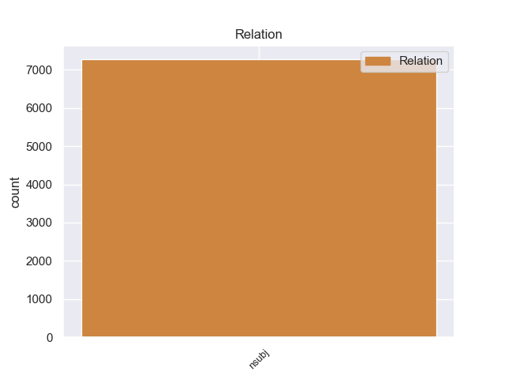
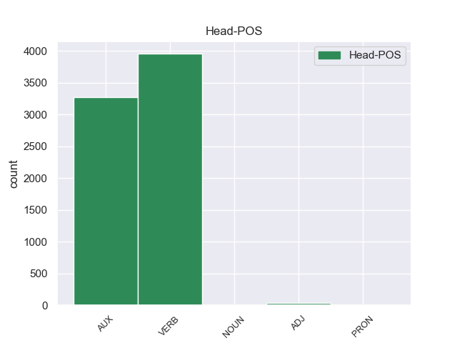
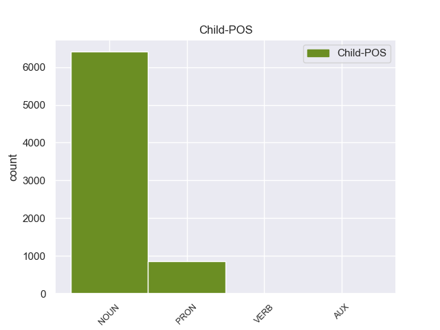

Distribution of features within this leaf



Agreement Rules sorted by frequency.
- When the dependent token is the nominal subject(nsubj) of the head token, and the dependent token is NOUN.
1 Gli _ _ _ _ 0 _ _ _
2 edifici edificio NOUN S Gender=Masc|Number=Plur 7 nsubj 8:nsubj _
3 di _ _ _ _ 0 _ _ _
4 il _ _ _ _ 0 _ _ _
5 centro _ _ _ _ 0 _ _ _
6 storico _ _ _ _ 0 _ _ _
7 erano essere AUX VA Mood=Ind|Number=Plur|Person=3|Tense=Imp|VerbForm=Fin 0 _ _ _
8 costruiti _ _ _ _ 0 _ _ _
9 con _ _ _ _ 0 _ _ _
10 l’ _ _ _ _ 0 _ _ _
11 argilla _ _ _ _ 0 _ _ _
12 rossa _ _ _ _ 0 _ _ _
13 di _ _ _ _ 0 _ _ _
14 il _ _ _ _ 0 _ _ _
15 deserto _ _ _ _ 0 _ _ _
16 , _ _ _ _ 0 _ _ _
17 un _ _ _ _ 0 _ _ _
18 materiale _ _ _ _ 0 _ _ _
19 molto _ _ _ _ 0 _ _ _
20 fragile _ _ _ _ 0 _ _ _
21 . _ _ _ _ 0 _ _ _
1 Il _ _ _ _ 0 _ _ _
2 titolo _ _ _ _ 0 _ _ _
3 di _ _ _ _ 0 _ _ _
4 la _ _ _ _ 0 _ _ _
5 canzone _ _ _ _ 0 _ _ _
6 che _ _ _ _ 0 _ _ _
7 Luciano _ _ _ _ 0 _ _ _
8 Ligabue _ _ _ _ 0 _ _ _
9 ha _ _ _ _ 0 _ _ _
10 composto _ _ _ _ 0 _ _ _
11 per _ _ _ _ 0 _ _ _
12 il _ _ _ _ 0 _ _ _
13 film _ _ _ _ 0 _ _ _
14 Da _ _ _ _ 0 _ _ _
15 zero _ _ _ _ 0 _ _ _
16 a _ _ _ _ 0 _ _ _
17 dieci _ _ _ _ 0 _ _ _
18 è _ _ _ _ 0 _ _ _
19 : _ _ _ _ 0 _ _ _
20 Questa questa PRON PD Gender=Fem|Number=Sing|PronType=Dem 21 nsubj 24:nsubj _
21 è essere AUX V Mood=Ind|Number=Sing|Person=3|Tense=Pres|VerbForm=Fin 0 _ _ _
22 la _ _ _ _ 0 _ _ _
23 mia _ _ _ _ 0 _ _ _
24 vita _ _ _ _ 0 _ _ _
25 . _ _ _ _ 0 _ _ _
1 Quando _ _ _ _ 0 _ _ _
2 ci _ _ _ _ 0 _ _ _
3 furono essere VERB V Mood=Ind|Number=Plur|Person=3|Tense=Past|VerbForm=Fin 0 _ _ _
4 le _ _ _ _ 0 _ _ _
5 rivolte rivolgere VERB V Gender=Fem|Number=Plur|Tense=Past|VerbForm=Part 3 nsubj 3:nsubj _
6 di _ _ _ _ 0 _ _ _
7 Los _ _ _ _ 0 _ _ _
8 Angeles _ _ _ _ 0 _ _ _
9 ? _ _ _ _ 0 _ _ _
1 La _ _ _ _ 0 _ _ _
2 rabbia _ _ _ _ 0 _ _ _
3 di _ _ _ _ 0 _ _ _
4 i _ _ _ _ 0 _ _ _
5 kosovari _ _ _ _ 0 _ _ _
6 non _ _ _ _ 0 _ _ _
7 può potere AUX VM Mood=Ind|Number=Sing|Person=3|Tense=Pres|VerbForm=Fin 24 nsubj 9:aux _
8 essere _ _ _ _ 0 _ _ _
9 incanalata _ _ _ _ 0 _ _ _
10 in _ _ _ _ 0 _ _ _
11 un _ _ _ _ 0 _ _ _
12 ambito _ _ _ _ 0 _ _ _
13 istituzionale _ _ _ _ 0 _ _ _
14 , _ _ _ _ 0 _ _ _
15 allora _ _ _ _ 0 _ _ _
16 cercano _ _ _ _ 0 _ _ _
17 di _ _ _ _ 0 _ _ _
18 esprimer _ _ _ _ 0 _ _ _
19 si _ _ _ _ 0 _ _ _
20 in _ _ _ _ 0 _ _ _
21 modo _ _ _ _ 0 _ _ _
22 diverso _ _ _ _ 0 _ _ _
23 , _ _ _ _ 0 _ _ _
24 è essere AUX V Mood=Ind|Number=Sing|Person=3|Tense=Pres|VerbForm=Fin 0 _ _ _
25 l' _ _ _ _ 0 _ _ _
26 opinione _ _ _ _ 0 _ _ _
27 prudente _ _ _ _ 0 _ _ _
28 di _ _ _ _ 0 _ _ _
29 il _ _ _ _ 0 _ _ _
30 rivale _ _ _ _ 0 _ _ _
31 di _ _ _ _ 0 _ _ _
32 Rugova _ _ _ _ 0 _ _ _
33 , _ _ _ _ 0 _ _ _
34 Adem _ _ _ _ 0 _ _ _
35 Demaci _ _ _ _ 0 _ _ _
36 , _ _ _ _ 0 _ _ _
37 capo _ _ _ _ 0 _ _ _
38 di _ _ _ _ 0 _ _ _
39 il _ _ _ _ 0 _ _ _
40 partito _ _ _ _ 0 _ _ _
41 parlamentare _ _ _ _ 0 _ _ _
42 ( _ _ _ _ 0 _ _ _
43 Ppk _ _ _ _ 0 _ _ _
44 ) _ _ _ _ 0 _ _ _
45 , _ _ _ _ 0 _ _ _
46 contrario _ _ _ _ 0 _ _ _
47 a _ _ _ _ 0 _ _ _
48 una _ _ _ _ 0 _ _ _
49 guerra _ _ _ _ 0 _ _ _
50 aperta _ _ _ _ 0 _ _ _
51 contro _ _ _ _ 0 _ _ _
52 Belgrado _ _ _ _ 0 _ _ _
53 , _ _ _ _ 0 _ _ _
54 ma _ _ _ _ 0 _ _ _
55 anche _ _ _ _ 0 _ _ _
56 a _ _ _ _ 0 _ _ _
57 una _ _ _ _ 0 _ _ _
58 politica _ _ _ _ 0 _ _ _
59 passiva _ _ _ _ 0 _ _ _
60 che _ _ _ _ 0 _ _ _
61 porta _ _ _ _ 0 _ _ _
62 diritto _ _ _ _ 0 _ _ _
63 a _ _ _ _ 0 _ _ _
64 la _ _ _ _ 0 _ _ _
65 capitolazione _ _ _ _ 0 _ _ _
66 . _ _ _ _ 0 _ _ _
Disagree Examples:
1 Ma _ _ _ _ 0 _ _ _
2 è _ _ _ _ 0 _ _ _
3 stata _ _ _ _ 0 _ _ _
4 la _ _ _ _ 0 _ _ _
5 memoria _ _ _ _ 0 _ _ _
6 a _ _ _ _ 0 _ _ _
7 garantire _ _ _ _ 0 _ _ _
8 fino _ _ _ _ 0 _ _ _
9 a _ _ _ _ 0 _ _ _
10 ieri _ _ _ _ 0 _ _ _
11 la _ _ _ _ 0 _ _ _
12 pace _ _ _ _ 0 _ _ _
13 in _ _ _ _ 0 _ _ _
14 Europa _ _ _ _ 0 _ _ _
15 , _ _ _ _ 0 _ _ _
16 o _ _ _ _ 0 _ _ _
17 è _ _ _ _ 0 _ _ _
18 stata _ _ _ _ 0 _ _ _
19 piuttosto _ _ _ _ 0 _ _ _
20 l' _ _ _ _ 0 _ _ _
21 esistenza _ _ _ _ 0 _ _ _
22 di _ _ _ _ 0 _ _ _
23 due _ _ _ _ 0 _ _ _
24 blocchi _ _ _ _ 0 _ _ _
25 che _ _ _ _ 0 _ _ _
26 attorno _ _ _ _ 0 _ _ _
27 a _ _ _ _ 0 _ _ _
28 essa _ _ _ _ 0 _ _ _
29 si _ _ _ _ 0 _ _ _
30 erano _ _ _ _ 0 _ _ _
31 organizzati _ _ _ _ 0 _ _ _
32 , _ _ _ _ 0 _ _ _
33 che _ _ _ _ 0 _ _ _
34 avevano _ _ _ _ 0 _ _ _
35 trasformato _ _ _ _ 0 _ _ _
36 la _ _ _ _ 0 _ _ _
37 paura _ _ _ _ 0 _ _ _
38 di _ _ _ _ 0 _ _ _
39 la _ _ _ _ 0 _ _ _
40 Bomba _ _ _ _ 0 _ _ _
41 in _ _ _ _ 0 _ _ _
42 ideologia _ _ _ _ 0 _ _ _
43 comune _ _ _ _ 0 _ _ _
44 malgrado _ _ _ _ 0 _ _ _
45 fossero essere VERB V Mood=Sub|Number=Plur|Person=3|Tense=Imp|VerbForm=Fin 0 _ _ _
46 l' _ _ _ _ 0 _ _ _
47 uno uno PRON PI Gender=Masc|Number=Sing|PronType=Ind 45 nsubj 45:nsubj _
48 democratico _ _ _ _ 0 _ _ _
49 e _ _ _ _ 0 _ _ _
50 l' _ _ _ _ 0 _ _ _
51 altro _ _ _ _ 0 _ _ _
52 totalitario _ _ _ _ 0 _ _ _
53 , _ _ _ _ 0 _ _ _
54 che _ _ _ _ 0 _ _ _
55 tenendo _ _ _ _ 0 _ _ _
56 il _ _ _ _ 0 _ _ _
57 dito _ _ _ _ 0 _ _ _
58 su _ _ _ _ 0 _ _ _
59 il _ _ _ _ 0 _ _ _
60 grilletto _ _ _ _ 0 _ _ _
61 di _ _ _ _ 0 _ _ _
62 l' _ _ _ _ 0 _ _ _
63 apocalisse _ _ _ _ 0 _ _ _
64 stabilivano _ _ _ _ 0 _ _ _
65 regole _ _ _ _ 0 _ _ _
66 e _ _ _ _ 0 _ _ _
67 confini _ _ _ _ 0 _ _ _
68 di _ _ _ _ 0 _ _ _
69 le _ _ _ _ 0 _ _ _
70 bombe _ _ _ _ 0 _ _ _
71 tollerate _ _ _ _ 0 _ _ _
72 ? _ _ _ _ 0 _ _ _
1 Gli _ _ _ _ 0 _ _ _
2 aviatori _ _ _ _ 0 _ _ _
3 italiani _ _ _ _ 0 _ _ _
4 erano _ _ _ _ 0 _ _ _
5 a _ _ _ _ 0 _ _ _
6 pranzo _ _ _ _ 0 _ _ _
7 quando _ _ _ _ 0 _ _ _
8 una _ _ _ _ 0 _ _ _
9 sessantina sessantina NOUN S Gender=Fem|Number=Sing 22 nsubj 22:nsubj|29:nsubj _
10 di _ _ _ _ 0 _ _ _
11 uomini _ _ _ _ 0 _ _ _
12 di _ _ _ _ 0 _ _ _
13 l' _ _ _ _ 0 _ _ _
14 " _ _ _ _ 0 _ _ _
15 Armee _ _ _ _ 0 _ _ _
16 Nationale _ _ _ _ 0 _ _ _
17 Congolaise _ _ _ _ 0 _ _ _
18 " _ _ _ _ 0 _ _ _
19 , _ _ _ _ 0 _ _ _
20 ammutinati _ _ _ _ 0 _ _ _
21 , _ _ _ _ 0 _ _ _
22 fecero fare VERB V Mood=Ind|Number=Plur|Person=3|Tense=Past|VerbForm=Fin 0 _ _ _
23 irruzione _ _ _ _ 0 _ _ _
24 in _ _ _ _ 0 _ _ _
25 il _ _ _ _ 0 _ _ _
26 locale _ _ _ _ 0 _ _ _
27 e _ _ _ _ 0 _ _ _
28 li _ _ _ _ 0 _ _ _
29 scambiarono _ _ _ _ 0 _ _ _
30 per _ _ _ _ 0 _ _ _
31 soldati _ _ _ _ 0 _ _ _
32 belgi _ _ _ _ 0 _ _ _
33 . _ _ _ _ 0 _ _ _
1 A _ _ _ _ 0 _ _ _
2 parte _ _ _ _ 0 _ _ _
3 le _ _ _ _ 0 _ _ _
4 bande _ _ _ _ 0 _ _ _
5 armate _ _ _ _ 0 _ _ _
6 ( _ _ _ _ 0 _ _ _
7 di _ _ _ _ 0 _ _ _
8 profughi _ _ _ _ 0 _ _ _
9 affamati _ _ _ _ 0 _ _ _
10 , _ _ _ _ 0 _ _ _
11 di _ _ _ _ 0 _ _ _
12 predoni _ _ _ _ 0 _ _ _
13 e _ _ _ _ 0 _ _ _
14 di _ _ _ _ 0 _ _ _
15 banditi _ _ _ _ 0 _ _ _
16 ) _ _ _ _ 0 _ _ _
17 che _ _ _ _ 0 _ _ _
18 lo _ _ _ _ 0 _ _ _
19 infestano _ _ _ _ 0 _ _ _
20 in _ _ _ _ 0 _ _ _
21 lungo _ _ _ _ 0 _ _ _
22 e _ _ _ _ 0 _ _ _
23 in _ _ _ _ 0 _ _ _
24 largo _ _ _ _ 0 _ _ _
25 , _ _ _ _ 0 _ _ _
26 perfino _ _ _ _ 0 _ _ _
27 polizia polizia NOUN S Gender=Fem|Number=Sing 30 nsubj 31:nsubj|41:nsubj _
28 e _ _ _ _ 0 _ _ _
29 soldati _ _ _ _ 0 _ _ _
30 hanno avere AUX VA Mood=Ind|Number=Plur|Person=3|Tense=Pres|VerbForm=Fin 0 _ _ _
31 abdicato _ _ _ _ 0 _ _ _
32 a _ _ _ _ 0 _ _ _
33 il _ _ _ _ 0 _ _ _
34 ruolo _ _ _ _ 0 _ _ _
35 di _ _ _ _ 0 _ _ _
36 tutori _ _ _ _ 0 _ _ _
37 di _ _ _ _ 0 _ _ _
38 l' _ _ _ _ 0 _ _ _
39 ordine _ _ _ _ 0 _ _ _
40 e _ _ _ _ 0 _ _ _
41 taglieggiano _ _ _ _ 0 _ _ _
42 la _ _ _ _ 0 _ _ _
43 popolazione _ _ _ _ 0 _ _ _
44 : _ _ _ _ 0 _ _ _
1 " _ _ _ _ 0 _ _ _
2 Ci _ _ _ _ 0 _ _ _
3 hanno _ _ _ _ 0 _ _ _
4 chiamato chiamare VERB V Gender=Masc|Number=Sing|Tense=Past|VerbForm=Part 0 _ _ _
5 a _ _ _ _ 0 _ _ _
6 le _ _ _ _ 0 _ _ _
7 cinque _ _ _ _ 0 _ _ _
8 - _ _ _ _ 0 _ _ _
9 quelli quello PRON PD Gender=Masc|Number=Plur|PronType=Dem 4 nsubj 4:nsubj|18:nsubj _
10 di _ _ _ _ 0 _ _ _
11 l' _ _ _ _ 0 _ _ _
12 Associazione _ _ _ _ 0 _ _ _
13 Mondo _ _ _ _ 0 _ _ _
14 Giusto _ _ _ _ 0 _ _ _
15 , _ _ _ _ 0 _ _ _
16 ci _ _ _ _ 0 _ _ _
17 hanno _ _ _ _ 0 _ _ _
18 detto _ _ _ _ 0 _ _ _
19 che _ _ _ _ 0 _ _ _
20 zio _ _ _ _ 0 _ _ _
21 Adelio _ _ _ _ 0 _ _ _
22 era _ _ _ _ 0 _ _ _
23 stato _ _ _ _ 0 _ _ _
24 ammazzato _ _ _ _ 0 _ _ _
25 con _ _ _ _ 0 _ _ _
26 i _ _ _ _ 0 _ _ _
27 bambini _ _ _ _ 0 _ _ _
28 ... _ _ _ _ 0 _ _ _
29 " _ _ _ _ 0 _ _ _
30 , _ _ _ _ 0 _ _ _
31 sgrana _ _ _ _ 0 _ _ _
32 gli _ _ _ _ 0 _ _ _
33 occhi _ _ _ _ 0 _ _ _
34 una _ _ _ _ 0 _ _ _
35 di _ _ _ _ 0 _ _ _
36 le _ _ _ _ 0 _ _ _
37 nipoti _ _ _ _ 0 _ _ _
38 , _ _ _ _ 0 _ _ _
39 Barbara _ _ _ _ 0 _ _ _
40 , _ _ _ _ 0 _ _ _
41 20 _ _ _ _ 0 _ _ _
42 anni _ _ _ _ 0 _ _ _
43 . _ _ _ _ 0 _ _ _
1 La _ _ _ _ 0 _ _ _
2 difesa difesa NOUN S Gender=Fem|Number=Sing 11 nsubj 12:nsubj _
3 di _ _ _ _ 0 _ _ _
4 Andreotti _ _ _ _ 0 _ _ _
5 e _ _ _ _ 0 _ _ _
6 l' _ _ _ _ 0 _ _ _
7 attacco _ _ _ _ 0 _ _ _
8 a _ _ _ _ 0 _ _ _
9 la _ _ _ _ 0 _ _ _
10 Pivetti _ _ _ _ 0 _ _ _
11 sono essere AUX V Mood=Ind|Number=Plur|Person=3|Tense=Pres|VerbForm=Fin 0 _ _ _
12 temi _ _ _ _ 0 _ _ _
13 cari _ _ _ _ 0 _ _ _
14 a _ _ _ _ 0 _ _ _
15 il _ _ _ _ 0 _ _ _
16 deputato _ _ _ _ 0 _ _ _
17 critico _ _ _ _ 0 _ _ _
18 d' _ _ _ _ 0 _ _ _
19 arte _ _ _ _ 0 _ _ _
20 : _ _ _ _ 0 _ _ _